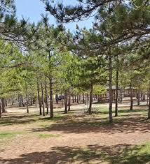

Nunu Vadisi
\nunu vadisi(1).jpeg)
Serin havası ve doğasıyla yaz aylarının vazgeçilmez piknik yerlerinden biridir.
Karaman’ın doğal güzelliklerinden biri olan Nunu Vadisi,
hem doğa severler hem de piknik yapmak isteyenler için harika bir kaçış noktasıdır.
Yemyeşil doğası, akar suyu, temiz havası ve sakin ortamıyla ziyaretçilerine huzurlu bir zaman geçirme imkanı sunar. Haritada Gör
Çamlık Ormanları
Gökçe Çamlığı Mesire Yeri çok kapsamlı değerlendirilebilecek bir yer.
Adından da anlaşılacağı üzere çamların arasında güzel bir gün geçirmenizi sağlayan
mesire alanı, eğlenceyi de ayağınıza kadar getiriyor.
Özellikle çocukların zamanın nasıl geçtiğini anlamayacağı piknik yerinde yapılabilecek aktiviteler burayı cazip kılıyor.
Huzur arayanlar için doğayla iç içe sessiz bir kaçış noktasıdır.
Tesis İmkanları:
Sedir
Macera parkı
Oyun alanı
ATV gezisi
At gezisi
Otopark
Giriş Ücretli!
Gökçe Çamlığı mesire yerine yalnızca kendinize ait araçla ulaşım sağlayabilirsiniz.
Haritada GörErmenek Barajı
\ermenek(1).jpeg)
Yeşillikler içinde baraj manzaralı piknik alanlarıyla meşhurdur.
Ermenek Barajı, su sporları için de uygun bir alandır.Ayrıca, baraj çevresinde doğa yürüyüşleri yapmak ve fotoğraf çekmek de popüler etkinlikler arasındadır.
Çadır kampı, karavan veya motorlu karavanla kamp yapmak isteyenler için de uygundur
Tesis İmkanları:
Voleybol SahasıTekne,Su bisikleti,Kano
Kamelya
Bisiklet yolu
Yürüyüş yolu
Kamp Alanı
Giriş Ücretsiz
Yalnızca kendinize ait araçla ulaşım sağlayabilirsiniz. Haritada GörTürk DÜnyası Kültür Parkı
\kültür.jpg)
Hem yürüyüş hem de mangal için uygun aile dostu bir yerdir.
Merkez'de bulunduğu için en ideal piknik alanları arasında yer alıyor.Yemyeşil peyzajı ve spor yapabilme imkanı sayesinde burada zamanın nasıl geçtiğini anlamayacaksınız.
Parkın ortasında büyük bir süs havuz vardır hem yeşillik hemde mavilik biraradadır (Girilmesi tehlikeli).
Ek olarak Park alanı gün batımının en güzel izlendiği yerlerden birisi.
Tesis İmkanları:
KamelyaMangal alanı
Halı saha
Bisiklet yolu
Yürüyüş yolu
Temiz su
Giriş Ücretsiz
Türk Dünyası Kültür Parkına yalnızca kendinize ait araçla ulaşım sağlayabilirsiniz. Haritada GörNecmettin Erbakan Parkı
\necmettin (1).jpeg)
Hem yürüyüş hem de çocuğunuzla vakit geçirmek için uygun aile dostu bir yerdir.
Haritada Gör